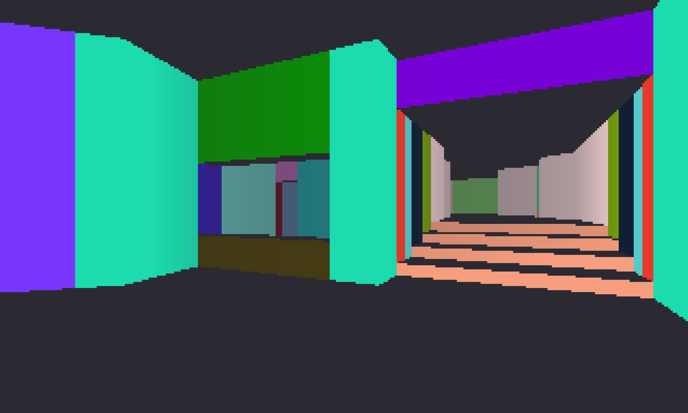
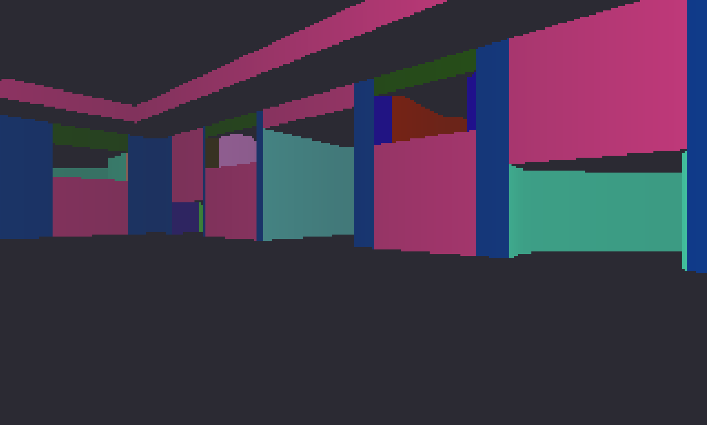

WAD file parsing
DOOM stores game data in a special file format called a WAD. WOOP provides a comprehensive parsing API following the DOOM Wiki specification, giving the renderer access to compiled level data, textures, sounds, and more.
A 3D software renderer inspired by the original DOOM, built to explore BSP traversal and efficient software rendering.



WOOP features a custom WAD file parser built to specification, reading game data at runtime, including the BSP data used to render levels.
DOOM stores game data in a special file format called a WAD. WOOP provides a comprehensive parsing API following the DOOM Wiki specification, giving the renderer access to compiled level data, textures, sounds, and more.
WOOP draws levels on the CPU with a BSP-driven pipeline designed to reduce overdraw. Beginning at the player’s position, sectors are drawn outward until the screen is filled or no sectors remain.
Clipping tests skip walls outside the player’s field of view and render only visible segments. These are combined with depth tests that discard occluded objects, minimizing draw operations and improving frame rate.